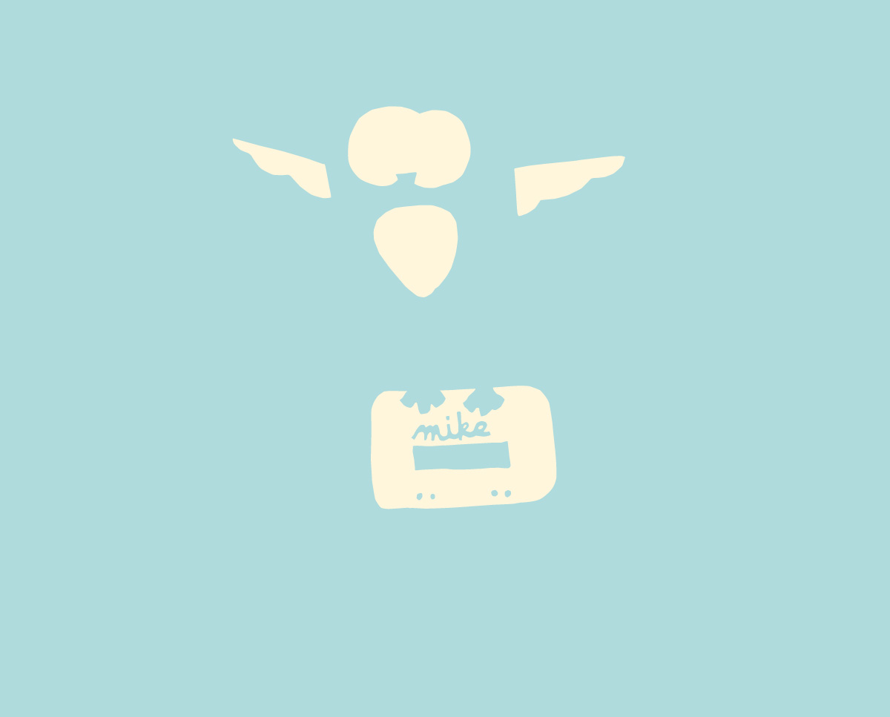
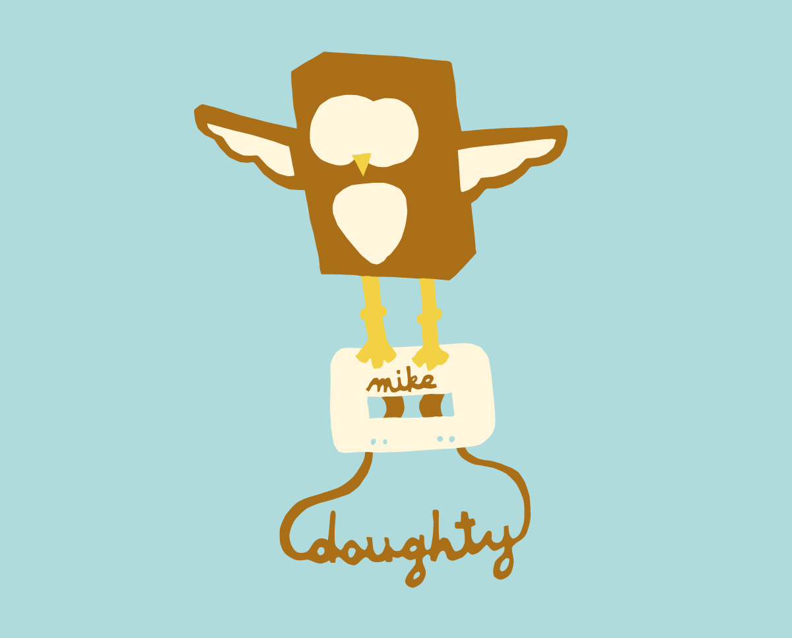
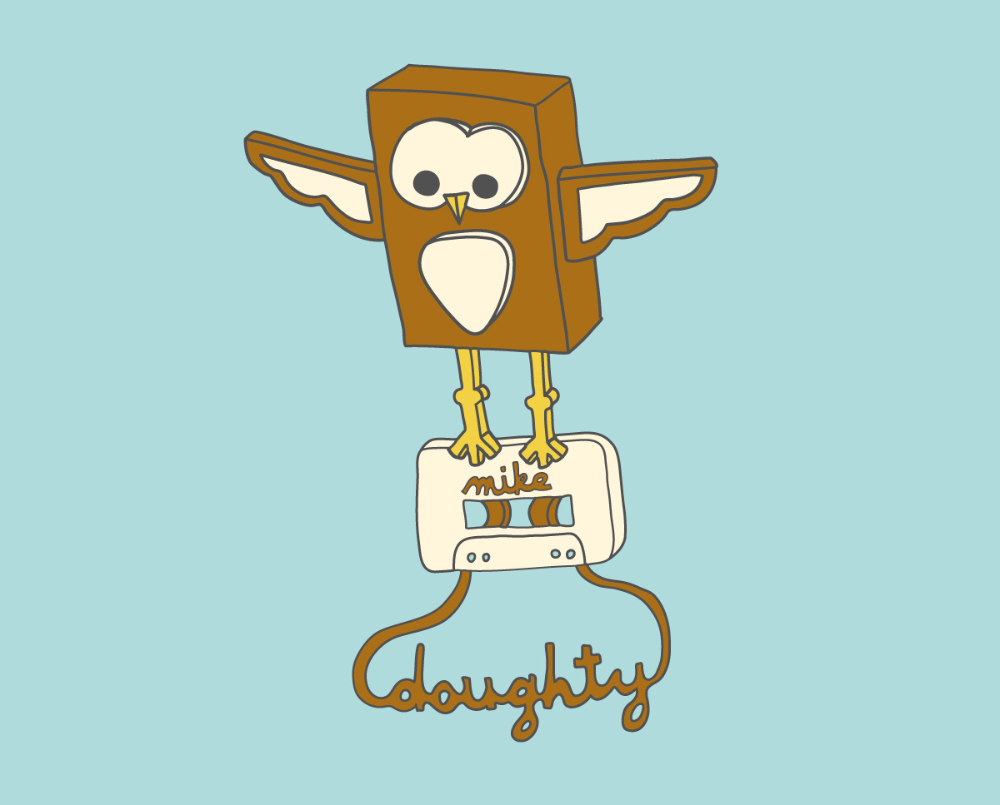

The Mike Doughty owl illustration screen printed on a shirt.
Mike Doughty asked me to create an illustration involving an owl and a cassette tape for his 2009 Fall Tour. I had been a fan of his music for years so needless to say I was pretty excited about this commission.
Classification - Illustration
Client - Mike Doughty
Typefaces - Handwritten
Production - 4-Color Screen Printed on a shirt and a bag. Buttons were made as well.
Materials - Fabric
Purchase - Owl Shirt
-
- 

- 
- 
How to screen print the Mike Doughty owl illustration.